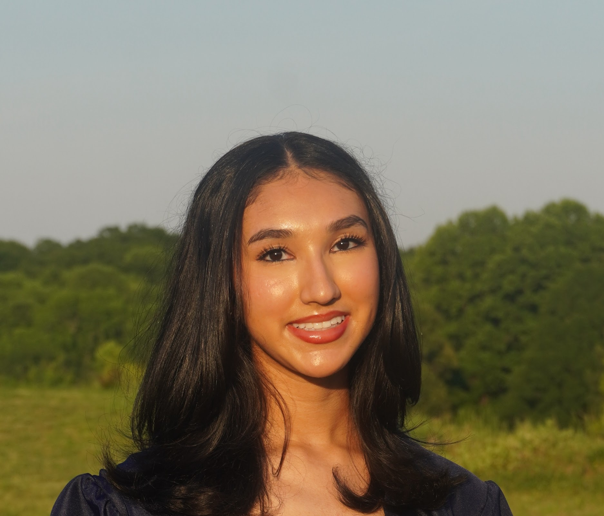

Aadrika Sharma
About Me
Hello, my name is Aadrika Sharma and I am from Cary, NC. I am a freshman at the University of North Carolina at Chapel Hill, majoring in Community and Global Public Health. I have always been deeply involved in service to my community. When I was younger, I started off with service through volunteering at food banks and local swim clubs in the Raleigh area, but my service initiatives became more specific to community health as I got older. In high school, I got deeply involved in anti-vaping initiatives through the POE Center of Health Education after witnessing students having health complications such as vaping-related lipoid pneumonia. Through the POE Center of Health Education, I advocated against teen vaping by speaking about the dangers of vaping on the Gen-V-Teen Vaping in North Carolina documentary and presenting at the Wake County Tobacco Free Community Forum. The work on anti-vaping initiatives also led me to create my own Water Safety organization, where I volunteered to present about how to stay safe on beaches and pools. Through my volunteering and advocacy work, I learned skills in organizing community events and communication in public speaking. Acquiring these skills made me more driven and passionite about continuing to advocate for healthy habits. Through my major in college, I hope to continue serving the communities around me through education and advocacy efforts. With my major, I will be able to learn more about how exactly to design programs in communities for health education and identify specific communities in which specific health disparities take place. I am interested in furthering my knowledge in designing health education programs so I can continue working towards lowering teen vaping in local communities and expand on the work that I have already done within communities in high school. I am also deeply interested in connecting personal medicine with public health to then see the connections between individual health problems compared to the trends that are seen within the whole community. For fun, I was deeply involved with my high school band playing the clarinet. I was part of the wind ensemble and marching band in high school. I was also a part of the student ambassador program at my school where I helped organize the shamrock shindig event for new students to network with eachother. Some of my hobbies include baking, trying new cafes, traveling, and working out/taking long walks!